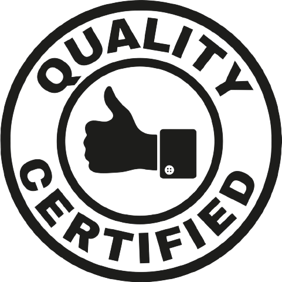
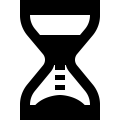

The air bubbles formed during the manufacturing of TEN 31 Blocks form a honeycomb structure which provides high compressive strength, also the use of high quality raw materials like OPC cement, gypsum etc. increases the binding force at the molecular level.

TEN 31 Blocks when submerged in water, floats up magically. They weigh 1/3rd of what clay bricks weigh and yet are stronger. This saves up to 20% on the cost of structure by decreasing the dead loads of the building.
The large size, uniform shape, precise cut and unmatched finish helps in rapid construction of superior quality walls which are Water Resistant, Fireproof, Earthquake Proof, Pest Proof and has high Thermal and Noise Insulation properties.
TEN 31 Blocks are very cost effective as it saves on labor, sand, cement, plaster, water, structure, wastage etc. leading up to 30% savings in the cost of the project. Constructions made of TEN 31 Blocks also leads to increased carpet area and lower electricity consumption.
Though quite new in India, AAC Blocks are very well trialled & tested product being used in other parts of the world like Europe and UAE for over 70 years. AAC blocks are much better than conventional bricks to fight the effect of weather and have proven to be highly durable.
